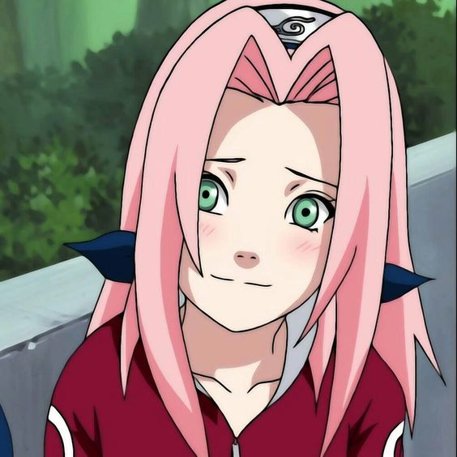

Naruto Uzumaki
Protagonista do anime, Naruto é um órfão cujo destino foi selado no dia em que ele nasceu. Nele, foi selada a Raposa de Nove Caudas (a Kyuubii), um monstro de poder imenso que atacou a Vila da Folha há muito tempo. Por causa disso, parte da Vila o rejeita, mas ao invés de se revoltar com a situação, Naruto tem o sonho de transformar-se no ninja mais forte da vila e provar o valor dele a todos.
Sasuke Uchiha

Melhor amigo e rival de Naruto, Sasuke também tem um passado trágico. Último sobrevivente do clã dele, os Uchiha que até então eram os mais fortes da Vila da Folha, ele tem como objetivo vingar-se de Itachi, seu irmão mais velho e autor deste massacre. Sasuke é um gênio natural, mas tem trevas profundas rondando ele e esta sede de vingança pode ser sua perdição. Um dos personagens com maior destaque em Naruto.
Sakura Haruno
Companheira de Naruto e Sasuke no Time 7, Sakura é uma jovem cheia de energia que está mais interessada em sua paixonite por Sasuke do que tornar-se uma ninja. Apesar disso, ela é bastante dedicada e inteligente, e logo vai perceber que precisa amadurecer para sobreviver neste mundo.
Kakashi Hatake - Kakashi Sensei

Professor de Naruto, Sasuke e Sakura e líder do Time 7, Kakashi é um dos ninjas mais fortes e talentosos da Vila da Folha. Apesar de parecer distraído e estar sempre lendo um livro, ele é extremamente talentoso e tem uma grande lição sobre o trabalho em equipe para ensinar aos alunos dele.
Rock Lee

Um dos personagens mais interessantes de Naruto, Rock Lee não consegue usar nem Ninjutsu nem Genjutsu. Por causa disso, ele concentrou-se em Taijutsu e possui técnicas de luta muito mais apuradas do que os seus colegas. Um verdadeiro gênio da força de vontade.
Hinata Hyuga
Detentora do Byakugan, Hinata é membro de um dos clãs mais prestigiosos de Konoha. Apesar disso, ela é bastante tímida e não leva muito jeito para o combate inicialmente. Por causa destes problemas, ela foi deserdada pelo pai como sucessora do clã dela. Além disso, ela também tem uma paixão oculta por Naruto e sempre fica nervosa quando ele está por perto.
Neji Hyuga
Primo de Hinata e membro da família secundária dos Hyuga, Neji é um personagem que se ressente dessa dinâmica do clã em que ele é membro. Apesar disto, ele é extremamente talentoso e conseguiu inclusive aprender técnicas secretas da família principal apenas olhando para elas.
Tsunade Senju
Tsunade Senju era a Quinta Hokage, posição que ela conseguiu após a morte de seu mestre, Hiruzen Sarutobi. Tsunade, Jiraiya e Orochimaru são os três ninjas lendários conhecidos como Sannin que foram treinados pelo terceiro Hokage Hiruzen Sarutobi. Tsunade pode invocar lesmas para a batalha e inclusive portar monstros Kaiju. Tsunade é conhecida como a melhor médica-ninja do mundo. Além de uma lendária médica-nin ela também possui uma força bruta impressionante (a personagem com mais força no anime) capaz de quebrar um susanoo com apenas um golpe. Sendo ela a neta do primeiro hokage, tem muita resistência física e grande quantidade de chakra.
Jiraya - Ero Senin
Um dos três ninjas sábios de Konoha, Jiraiya torna-se professor de Naruto por acaso e ensina a ele algumas das suas principais técnicas, além de lições de vida que ele traz até hoje. Certamente um dos personagens mais queridos de Naruto.
Curiosidade: Jiraya era escritor e também foi profesor do pai de Naruto, Minato, e o nome Naruto veio de um personagem criado por Jiraya
Gaara do Deserto
Gaara é um ninja da areia. Nele, foi selado o espírito da areia (o Shukaku), um monstro de poder imenso capaz de destruir países. Por causa disso, ele foi Considerado monstro pela vila e passou a desprezar o mundo.A infância de Gaara era um paralelo com a de Naruto Uzumaki de muitas maneiras. Enquanto Naruto desenvolveu a ideia errada de que brincadeiras e travessuras lhe trariam a atenção que ele ansiava, Gaara chegou à conclusão de que ele podia preservar e confirmar sua própria existência, matando todos e qualquer um que o desafiar, garantindo desta forma uma prova de sua existencialidade. Testemunhar a determinação que Naruto possuía para proteger seus amigos, fez com que Gaara questionasse o caminho que ele havia determinado para si mesmo quando era criança. Percebendo que ele tinha escolhido o caminho errado, Gaara decidiu seguir o caminho escolhido por Naruto, a fim de, finalmente, ser visto como um ser humano, e posteriormente, entrega sua vida para salvar sua aldeia
Minato Namikaze, o quarto Hokage
Conhecido como o Relâmpago Amarelo de Konoha, Minato era um ninja lendário que se tornou o Quarto Hokage. É o pai de Naruto Uzumaki e marido de Kushina Uzumaki. Ficou reconhecido como o Herói de Konoha após salvá-la do ataque de Tobi, juntamente com a Raposa de Nove Caudas